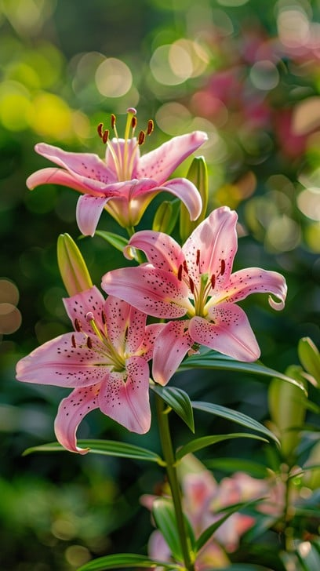
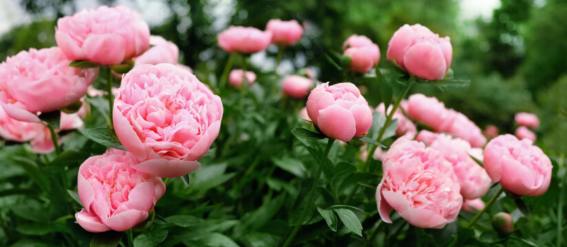
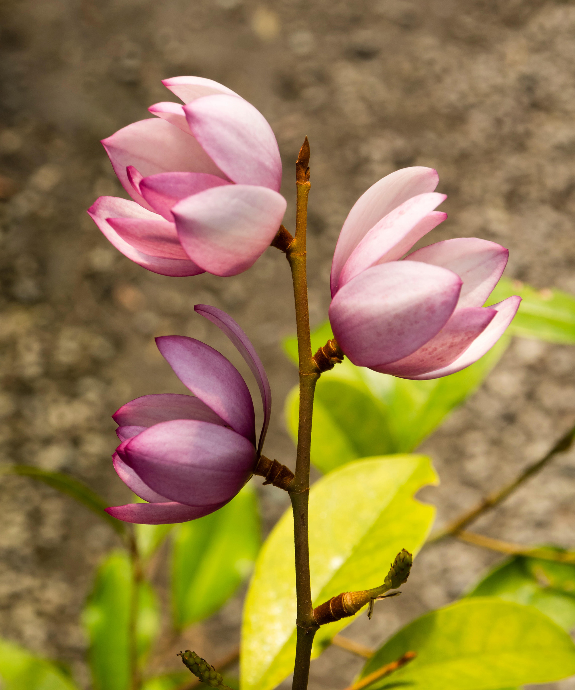
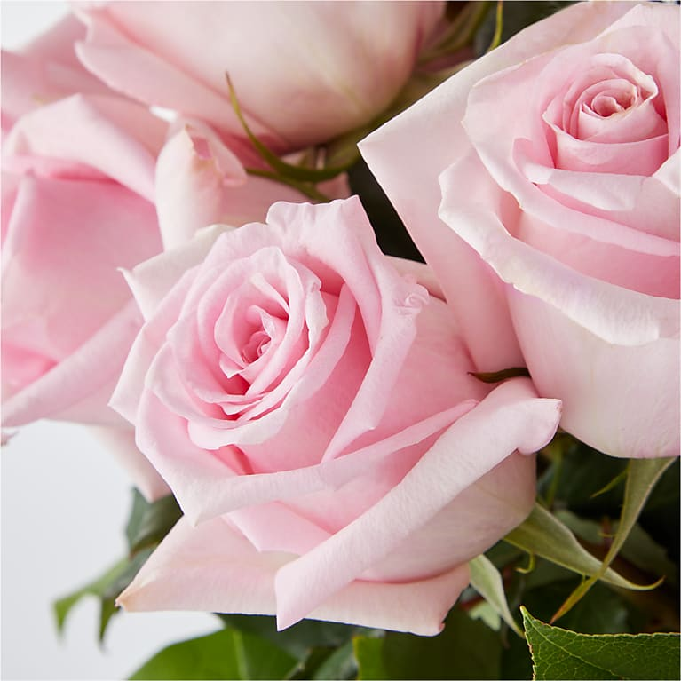
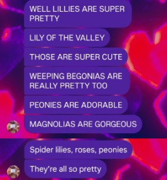

the first stop

Lilies
For the way you light up every room,
even the ones we're not in together.
even the ones we're not in together.
scroll gently ↓
the second stop

Lily of the Valley
For your quiet strength.
You don't even know how brave you are.
You don't even know how brave you are.
scroll gently ↓
the third stop

Weeping Begonias
Because missing you feels like beautiful rain —<
it hurts, but it means something real.
it hurts, but it means something real.
scroll gently ↓
the fourth stop

Peonies
For all the softness you carry
in a world that tries to make you hard.
in a world that tries to make you hard.
scroll gently ↓
the fifth stop

Magnolias
For your dignity and grace.
You make me want to be better.
You make me want to be better.
scroll gently ↓
the sixth stop

Spider Lilies
For the memories that bloom in the spaces between us.
I'd wait forever in the in-between.
I'd wait forever in the in-between.
scroll gently ↓
the last stop

Roses
For the obvious reason.
I love you. That's never going to change.
I love you. That's never going to change.
one more scroll ↓

why i chose those flowers heh
IU LOVE U SO MUCH BABY
MMMMMMMMMMMMMMMMMMMMMMWAH
MMMMMMMMMMMMMMMMMMMMMMWAH
🤍
I miss you in ways I haven't learned to say yet.
But I'm learning. For you, I'm learning.
But I'm learning. For you, I'm learning.